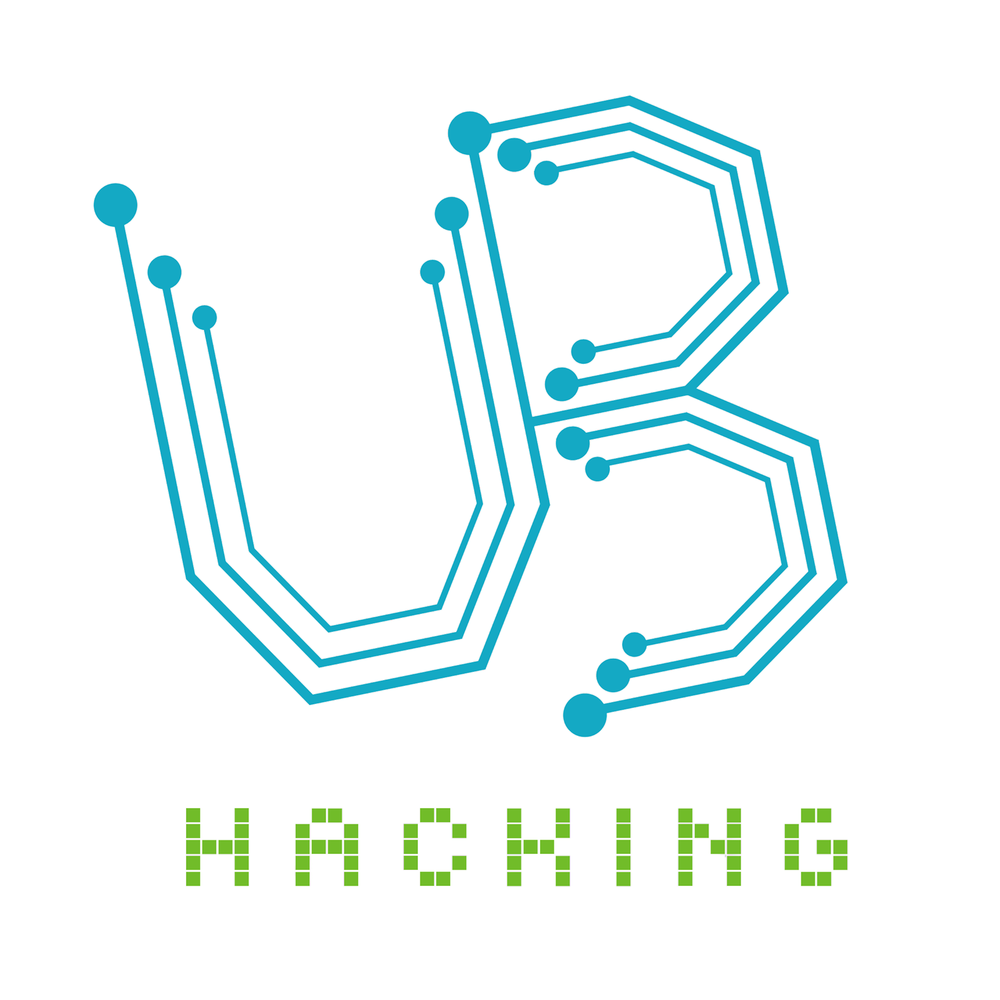

Richard Hanulewicz
Software Engineer
github.com/rshanule
linkedin.com/in/rshanule
twitter.com/rickyhanulewicz
Richard Hanulewicz
Software Engineer
github.com/rshanule
linkedin.com/in/rshanule
twitter.com/rickyhanulewicz
|
Education
M.S./B.S. Computer Science and Engineering 
Master of Science (2019), 3.7 GPA Bachelor of Science (2018), 3.6 GPA |
Research Gesture Authentication in Trusted Execution Environment (2018) Using Dynamic Time Warping in Arm TrustZone |
Projects |
|
|
AutoGrader 3.0 Full front-end and database solution for UB's Autolab. Built from the ground-up with React.js and MongoDB. Landing Page (Legacy) | Production (Live!) |
|

Pale Blue Dot | Source APICalculates closest observatory to international space station. Uses NASA API to track the ISS in real-time. |
|
Affiliations |
|
Blue Systems Research Group Collaborator 2016-2017 |
UB ACM Vice President 2017-2018 |

UB Hacking Organizer 2016-2017 |